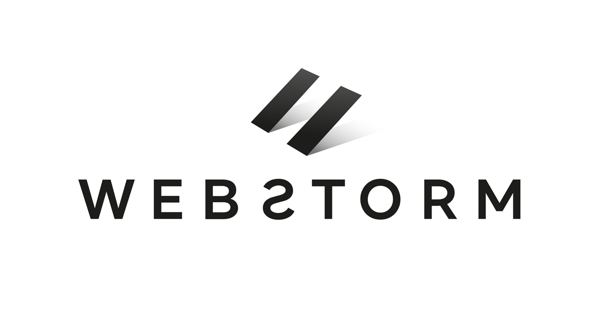
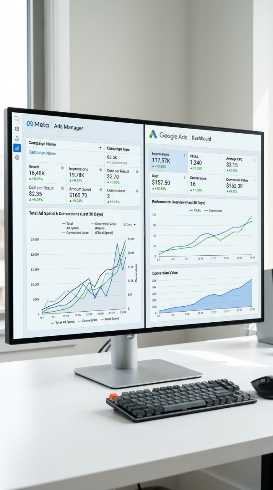

Portfolio — UE KAPs · Bachelier en Marketing · HELMo
Alexis
Renkin
Futur Ads Manager | Data, Conversion & Intelligence Artificielle
Passionné par la performance digitale et mordu de nouvelles technologies, j'aime utiliser l'innovation (comme l'IA) pour créer des campagnes impactantes. Découvrez à travers ce portfolio trois ans d'apprentissage et l'évolution de mon profil de marketeur.
(1 en bonus)
02 — Présentation personnelle
Qui suis-je ?
Étudiant en marketing avec l'envie d'entreprendre, passionné de sports moteurs et convaincu que la data est le meilleur copilote qu'on puisse avoir.
Mon parcours
Curieux de nature et entrepreneur dans l'âme, j'ai très tôt développé le sens des responsabilités en gérant des chantiers de déménagement et vide-maison avec des équipes d'étudiants pendant 6 ans. Une expérience qui m'a appris à manager, anticiper et m'adapter, des compétences que je retrouve aujourd'hui dans le marketing digital.
Ambition
Je me fixe toujours des objectifs concrets et je mets tout en œuvre pour les atteindre. En marketing digital, cette ambition se traduit par une recherche constante de meilleures performances et de meilleurs résultats.
Curiosité
Curieux de nature, je ne me contente jamais de ce que je sais déjà. Nouveaux outils, nouvelles plateformes, nouvelles stratégies, j'aime comprendre comment les choses fonctionnent et les tester par moi-même.
Résilience
6 ans de gestion de chantiers m'ont appris une chose essentielle : les imprévus font partie du jeu. J'ai appris à encaisser, rebondir et trouver des solutions rapidement. En marketing digital, où les résultats ne sont jamais garantis, c'est une qualité que j'utilise au quotidien.
03 — Représentation des métiers
Ma vision du marketing
Ce que je crois, ce qui m'attire, où je me projette.
Ce que font les pros du marketing
En agence, les pros du marketing sont avant tout des gens proactifs. Ils ne répondent pas juste aux briefs, ils les devancent. Analyser le marché, identifier ce qui pourrait fonctionner et le proposer au client avant qu'il ne le demande, c'est ça le vrai travail.
Pourquoi le digital & la performance
Le digital est en plein boom et l'IA n'en est qu'à ses débuts. Les campagnes de demain seront 10x plus performantes, plus ciblées et plus intelligentes. C'est exactement là où je veux être.
Mon évolution du bloc 1 au bloc 3
En trois ans, ma vision du marketing a complètement changé. J'ai failli arrêter, le métier ne me parlait pas vraiment. C'est mon stage qui a tout changé : j'ai découvert le métier d'Ads Manager, que je ne connaissais pas, et j'ai immédiatement su que c'était ça. La diversité des défis, la data, l'optimisation constante, c'est exactement ce qui me challenge et me motive.
04 — Axe 1 · Situation emblématique
Stage chez Webstorm & Portfolio
Quels savoir-agir ai-je développés dans le cadre de mon stage chez Webstorm ?
Stage chez Webstorm Digital Agency — Luxembourg
Durant 16 semaines chez Webstorm Digital Agency au Luxembourg, j'ai eu l'opportunité de gérer des campagnes publicitaires sur Meta et Google pour plusieurs clients, de réaliser des analyses UX et des audits de situation digitale pour préparer des pitchs clients. Un environnement d'agence qui m'a plongé directement dans les réalités du métier d'Ads Manager. La difficulté la plus marquante a été la récupération d'une page Facebook bloquée dans un Business Manager dont le seul administrateur était un compte restreint. Deux mois de contact avec le support Meta, une situation toujours pas résolue mais qui m'a appris la persévérance et la gestion des imprévus dans un contexte professionnel réel.
Dans le cadre de la prospection de nouveaux clients, j'ai effectué des analyses de situation digitale et des audits UX. Ces diagnostics servaient de base aux pitchs de mes responsables, il fallait comprendre l'environnement digital du prospect et identifier les opportunités d'amélioration avant même le premier rendez-vous.
J'ai développé ce savoir-agir à travers la gestion complète de campagnes publicitaires : choix des formats sur Google et Meta, planification du media buying annuel et évaluation des performances via les KPIs. Chaque décision devait être justifiée et orientée résultats.
La communication client chez Webstorm m'a appris à m'adapter à différents profils d'interlocuteurs. Que ce soit pour expliquer des résultats décevants, défendre une stratégie ou proposer de nouvelles orientations, j'ai développé une vraie aisance dans la communication professionnelle.
Piloter des projets, c'est ce que j'ai fait au quotidien chez Webstorm. Coordination des campagnes, respect des délais, gestion des imprévus comme le problème du Business Manager Meta — autant de situations qui m'ont appris à gérer la pression et à trouver des solutions concrètes.
Création du portfolio — Premier site web codé
Ce portfolio est lui-même une situation emblématique. Plutôt que d'utiliser un outil no-code, j'ai choisi de le coder en HTML/CSS et de le déployer sur GitHub Pages, une technologie que je ne connaissais pas. Du code à la mise en ligne, j'ai tout appris de zéro, avec l'aide de l'IA comme outil d'apprentissage.
En choisissant de coder ce portfolio plutôt que d'utiliser Canva, j'ai mobilisé le SA5 dans sa forme la plus concrète : mettre à jour ses pratiques grâce aux technologies actuelles, s'inscrire dans une démarche de formation continue et cultiver une posture de curiosité face à l'inconnu. L'IA m'a servi d'outil d'apprentissage, une façon moderne et efficace de développer de nouvelles compétences.
Tableau récapitulatif
| Situation emblématique | Savoir-agir | Composante essentielle |
|---|---|---|
| Stage - Webstorm | SA1 — Diagnostic stratégique | Analyser l'environnement digital du prospect |
| Stage - Webstorm | SA2 — Plan marketing | Évaluer la faisabilité et l'efficacité des actions (ROI, KPI) |
| Stage - Webstorm | SA3 — Communication | S'adapter aux réactions et besoins des interlocuteurs |
| Stage - Webstorm | SA4 — Piloter des projets | Gérer les contraintes et imprévus avec résilience |
| Portfolio - Site Web | SA5 — Curiosité professionnelle | Mettre à jour ses pratiques grâce aux technologies actuelles |

05 — Axe 2 · Métier cible
Devenir Ads Manager
Quels savoir-agir utiles à ce métier ai-je développés, et comment ?
| Savoir-agir | Composante mobilisée | Activité réalisée |
|---|---|---|
| SA1 — Diagnostic stratégique | Rechercher des informations fiables sur les concurrents et leur environnement publicitaire |
Google Ads Transparency
Meta Ads Library
Linkedin Ads Library
Audit Concurrentiel, analyse de formats, cibles et zones de diffusion des concurrents pour orienter notre stratégie. |
| SA2 — Plan marketing | Évaluer la faisabilité et l'efficacité des actions (ROI, KPI) |
Media Buying
Planification saisonnière
Élaboration des plans media buying annuels en tenant compte des saisonnalités produits, adaptation des budgets selon les périodes de forte et faible demande pour maximiser le ROI. |
| SA5 — Curiosité professionnelle | Mettre à jour ses pratiques grâce aux technologies actuelles |
Google Ads Scripts
Agent IA
Automatisation des relevés media buying via Google Ads Scripts et développement d'un agent IA appliqué à l'Ads Management |

06 — Conclusion réflexive
Ce que je retiens
Un regard honnête sur trois ans de formation et de construction de moi-même.
Ces trois ans m'ont appris que j'apprends mieux par la pratique que par la théorie. Le stage, les automatisations, le codage de ce site, c'est en faisant que j'ai vraiment progressé. J'ai aussi compris que la curiosité est ma meilleure alliée : quand quelque chose m'intéresse, je vais chercher par moi-même bien au-delà de ce qu'on me demande.
Les cours m'ont donné le vocabulaire et les frameworks. Mais c'est le terrain qui leur a donné du sens. Planifier un media buying en agence, c'est autre chose que de l'étudier dans un syllabus. Mon expérience dans les chantiers de déménagement m'a aussi rappelé quelque chose que les cours effleurent rarement : manager sous pression, ça s'apprend en le faisant.
Ma représentation du marketing a fait un chemin de 180°. Au départ, je me demandais si j'avais fait le bon choix. C'est le stage qui a tout basculé : en gérant de vraies campagnes pour de vrais clients, j'ai compris que le marketing de performance n'a rien à voir avec ce qu'on imagine depuis un banc d'école. Aujourd'hui, je sais exactement où je veux aller et pourquoi.
La suite est déjà écrite : je commence comme étudiant chez Webstorm le 1er juillet, et si mes examens de septembre se passent bien, j'y intègre l'équipe définitivement. 16 semaines de stage ont suffi pour confirmer que c'est l'environnement où je veux progresser. L'automatisation via scripts et agents IA, c'est là que le métier va et je compte bien y être.
« Ce ne sont pas les plus forts qui survivent, ni les plus intelligents, mais ceux qui s'adaptent le mieux au changement. »
Darwin